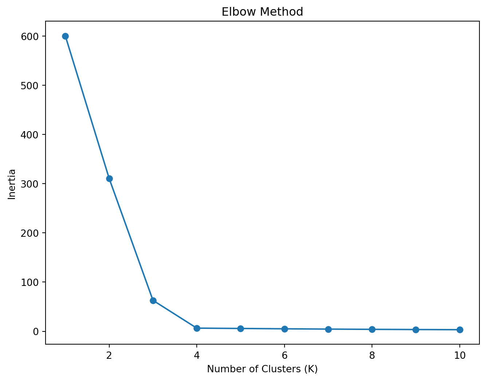
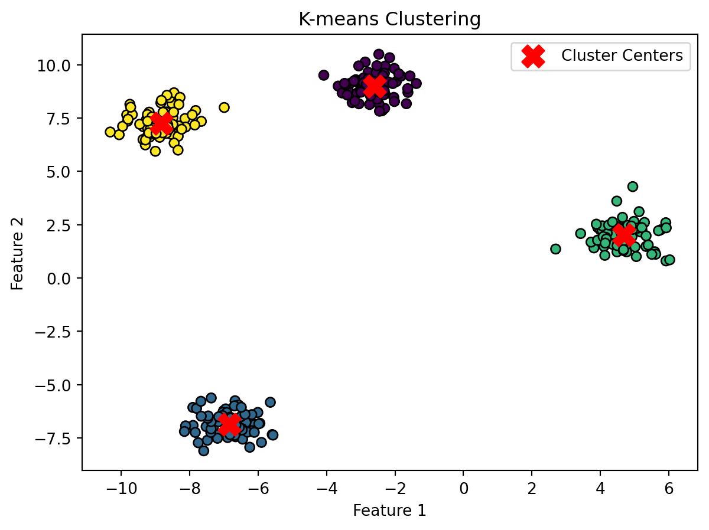

Code
# Import libraries
import numpy as np
from sklearn.cluster import KMeans
import matplotlib.pyplot as plt
from sklearn.preprocessing import StandardScaler
from sklearn.metrics import silhouette_score
from sklearn.datasets import make_blobsSeyi Dasho
Clustering
Clustering is an unsupervised learning technique that groups similar data points together based on their features and characteristics. The goal is to find natural groupings within the data.
Clustering algorithms include:
i. K-Means Clustering: Groups data into k clusters by minimizing within-cluster variation. Requires specifying k upfront.
ii. Hierarchical Clustering: Builds a hierarchy of clusters in a bottom-up (agglomerative) or top-down (divisive) manner.
iii. DBSCAN: Finds dense clusters based on a minimum number of nearby points. Does not require specifying k.
Steps for clustering generally include:
i. Selecting appropriate features to cluster on
ii. Choosing a clustering algorithm and tuning hyperparameters
iii. Fitting the model to the training data
iv. Evaluating the clusters and analysis results
# Generate synthetic data for clustering
X, y = make_blobs(n_samples=300, centers=4, random_state=42, cluster_std=0.60)
# Finding the optimal number of clusters (K)
# Standardize the features
scaler = StandardScaler()
scaled_data = scaler.fit_transform(X)
# Use the Elbow Method to find the optimal number of clusters
# ignore warnings
import warnings
warnings.filterwarnings('ignore')
inertia_values = []
for k in range(1, 11):
kmeans = KMeans(n_clusters=k, random_state=42)
kmeans.fit(scaled_data)
inertia_values.append(kmeans.inertia_)
# Plotting the Elbow Method
plt.figure(figsize=(8, 6))
plt.plot(range(1, 11), inertia_values, marker='o')
plt.xlabel('Number of Clusters (K)')
plt.ylabel('Inertia')
plt.title('Elbow Method')
plt.show()
# Apply K-means clustering using 4 as optimal cluster number
kmeans = KMeans(n_clusters=4, random_state=42)
y_kmeans = kmeans.fit_predict(X)
# Visualize the clusters
plt.scatter(X[:, 0], X[:, 1], c=y_kmeans, cmap='viridis', edgecolor='k')
centers = kmeans.cluster_centers_
plt.scatter(centers[:, 0], centers[:, 1], c='red', marker='X', s=200, label='Cluster Centers')
plt.title('K-means Clustering')
plt.xlabel('Feature 1')
plt.ylabel('Feature 2')
plt.legend()
plt.show()
Overall, clustering is a key unsupervised technique for understanding structure in data, summarizing or compressing data, and identifying anomalies. It complements supervised learning methods in machine learning applications.
Back to top